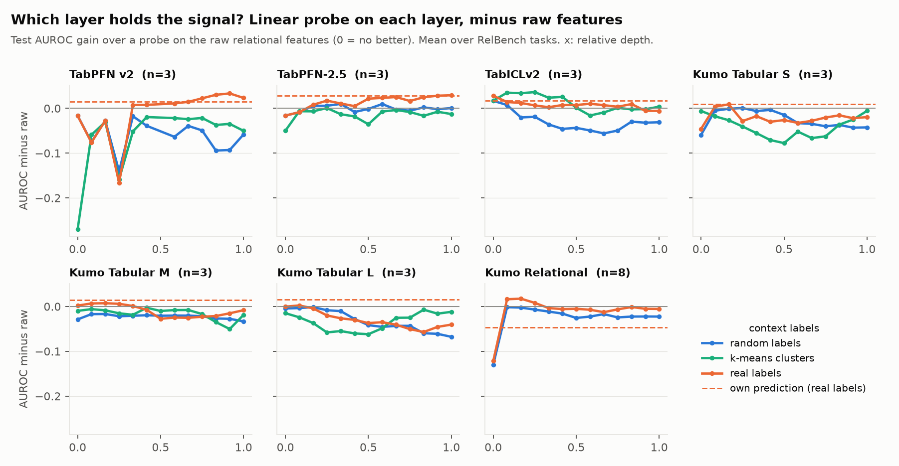
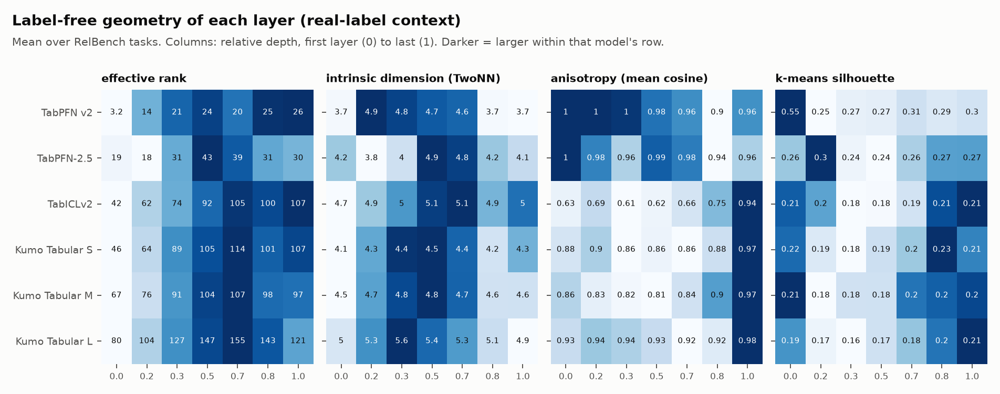
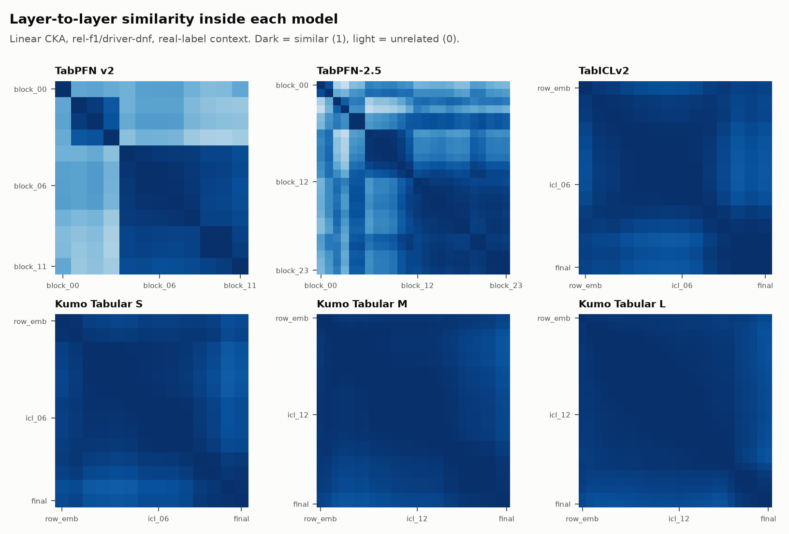
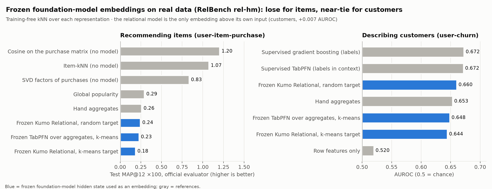

frozen-embeddings-retrieval · draft, 3 October 2026 · companion paper: Open TabFM-AutoA tabular foundation model (TFM) reads labelled rows as a prompt and predicts new rows in one forward pass. Because nothing is fitted, its hidden states are attractive as embeddings: one frozen model, any table, no training. Benchmarks of tabular embeddings (TEmBed, 2026) and practitioners take the last layer, usually via get_embeddings(). But the last layer of an in-context model is shaped by the in-context labels, and mechanistic studies find that the label is read out at a particular depth. The question of which layer gives the best entity embedding, on real relational data, has not been asked.
Contributions. (i) A layer-by-layer probe of seven open TFMs, including a relational one, on 8 RelBench tasks with official evaluation. (ii) The effect of the in-context labels (real, random, k-means, zeros) on what each layer keeps. (iii) A test of whether label-free geometry (effective rank, TwoNN intrinsic dimension, anisotropy, k-means silhouette) can pick the layer. (iv) Layer similarity within and across models by linear CKA. (v) A protocol finding for layer probes of in-context models. (vi) A retrieval test of frozen embeddings on rel-hm recommendation.
Layers of tabular foundation models. “Is One Layer Enough?” (ICML 2026) compares layers of six TFMs by CKA and cosine similarity and finds strong depth redundancy. “A Mechanistic Study of Tabular Foundation Models” (2026) finds that a probe for the target in TabPFN v2 jumps between layers 8 and 9, while TabICLv2 is readable early. Both study prediction on single tables; we study embeddings for entities in relational databases.
Tabular embeddings. TEmBed (IBM, 2026) benchmarks row, column and table embeddings; TFM rows enter as last-layer get_embeddings() and are weak on text-heavy tables. Relational foundation models (KumoRFM, OpenRFM) predict over database subgraphs; Kumo Relational (NVIDIA, 2026) is an open one.
Probing and geometry. Linear probes (Alain & Bengio, 2017) read what a layer encodes; CKA (Kornblith et al., 2019) compares representations; effective rank (RankMe, Garrido et al., 2023), TwoNN intrinsic dimension (Facco et al., 2017) and anisotropy (Ethayarajh, 2019) describe their shape without labels.
Tasks. 8 RelBench entity classification tasks: rel-f1 driver-dnf and driver-top3, rel-trial study-outcome, rel-event user-repeat and user-ignore, rel-avito user-visits and user-clicks, rel-hm user-churn. Official train/val/test tables; test AUROC by the official evaluator.
Inputs. For each task row (entity, time) we build a temporally safe 2-hop subgraph: the entity row, its latest 50 child rows of each kind with time ≤ t, and its parent rows. Kumo Relational reads the subgraph directly. The tabular models read a flattened version: the entity's columns plus, per child table, the count, the days since the last event and the means of numeric columns.
Context, probes, selection. Each model is given a context of training rows with one of four label kinds: real labels, random labels, k-means cluster ids of the features, or zeros. We record every layer's output for the query rows: the row encoder, the graph layer (Kumo Relational), each transformer block, and the final norm. A logistic-regression probe (C = 0.1, standardised inputs) and a cosine kNN probe (k = 50) are trained on 4,000 training rows. The layer is picked by validation AUROC; regret is the gap to the best test layer. Raw is the same probe on the flattened features.
Time split. The probe-training rows are always strictly later than every context row, as the validation and test rows are (Section 4.5 shows why this matters).
Models. Kumo Relational (study J18, 8 tasks, 512 context entities); TabPFN v2 (J19, 8 tasks, 3,000 context rows, four label kinds); TabPFN v2, TabPFN-2.5, TabICLv2 and Kumo Tabular S/M/L with label-free geometry and CKA (J21, {{N_J21}} of 5 tasks so far: {{J21_TASKS}}).
Kumo Relational: read the graph layer, not the head. The val-picked layer is the graph layer or one of the first transformer layers on 7 of 8 tasks. It beats the model's own prediction on {{K_WIN_OWN}} of {{K_N}} tasks (mean {{K_VAL}} vs {{K_OWN}}) and the last layer on most (mean {{K_LAST}}). Later in-context layers lose linear signal step by step (Figure 1). On rel-event user-repeat the model's head is at chance (0.49) on probe-training and test rows alike; a direct check of its per-class outputs confirms this is the model, not our score extraction. The graph layer of the same forward pass reaches 0.79.
TabPFN: blocks 8–9. With real labels, the val-picked block is 8 or 9 on {{T_B89}} of 8 tasks, which is where the mechanistic study locates TabPFN's label read-out. The gain over the model's own prediction is small (mean {{T_VAL}} vs {{T_OWN}}; last layer {{T_LAST}}).

Kumo Relational with random labels matches a probe on hand-built relational features ({{K_RAND}} vs {{RAW}}) while reading the database with no feature engineering; it is above them on 4 of 8 tasks. TabPFN over the same features falls below them with every label-free context, and the k-means context, which recovers planted segments on synthetic data, does not help on real tasks. The tabular models in J21 behave alike: label-free layers are close to the raw features on average, with rel-trial the exception, where the early layers of TabICLv2 and Kumo Tabular beat them by 0.06–0.08.
Validation labels are the best guide (mean regret {{REG_VAL}}), but the TwoNN intrinsic dimension is nearly as good ({{REG_ID}}) without any label, and better than taking the last layer ({{REG_LAST}}). Effective rank is the most consistent signal (ρ = {{RHO_ER}}, negative in {{ER_NEG}} of runs): layers whose outputs spread over more directions are worse probes. Its mean regret ({{REG_ER}}) is hurt by a few large misses.

The last layers of different models are similar to each other (CKA {{CKA_LAST}}): with real labels in context they converge on a representation of the label. The val-picked layers are less alike ({{CKA_BEST}}), except within the TabICL/Kumo Tabular family, which share an architecture. Both are far from the raw features ({{CKA_RAW_BEST}} and {{CKA_RAW_LAST}}). The useful layer keeps model-specific structure that the last layer has already projected away (Figure 3).

Our first runs drew the context rows and the probe-training rows at random from the same training table. Most probe-training rows then had their own entity in the context at a neighbouring date. With real labels, the late layers carry a copy of that neighbour's label, which validation and test rows, later than every context row, never get. A linear probe learns the copy and fails: two models' last layers scored 0.40 and 0.43, below chance, while a kNN probe on the same layers stayed at 0.75–0.79. The time split removes it:
With real labels, the last layer moves from {{P_LAST_RAND}} to {{P_LAST_TIME}} over {{P_N}} runs. Any layer study of an in-context model should keep probe rows out of the context's period, or it will find that the last layers “forget” when they have only specialised.

On a synthetic shop database with planted segments, TabPFN's hidden state with k-means labels in context recovers the segments (P@10 0.82; a GNN trained on the database 0.88). On rel-hm, every frozen embedding (MAP@12 ×100 0.18–0.24) is below hand aggregates (0.26) and far below cosine similarity on the purchase matrix (1.20). On TEmBed's text-heavy Wikidata triplets TabPFN rows score 0.55–0.61 against 0.77 for a small text encoder, whatever the in-context labels. Frozen hidden states summarise an entity's features; for item retrieval the interaction matrix is the right representation.
What to use. For an entity embedding from a frozen model on relational data: take Kumo Relational's graph layer, with random labels if no labels exist; with labels, probe the graph layer rather than trusting the head. For TabPFN with labels, use blocks 8–9. Without validation labels, prefer the layer with the lowest intrinsic dimension over the last layer.
Limitations. One seed and one context size per model; 4,000 probe-training rows; linear and kNN probes only. Several tasks are small (rel-f1 top3: 677 probe rows; rel-event repeat: 246 test rows), so per-task differences under 0.02 are noise; we report means over 8 tasks. The time split puts rel-f1's context before 1987, which lowers every score there equally. The flattened features drop text columns, which helps Kumo Relational on rel-trial. The six-model study (J21) covers {{N_J21}} of its 5 tasks in this draft.
Conclusion. The best embedding in a frozen tabular or relational foundation model is usually not its last layer. The last layers converge on the in-context label; the earlier layers keep the entity. A label-free statistic can find a good layer, and a simple time split is needed to see any of this.
Experiments and this paper were produced with Claude Code; tables and the numbers in the text are filled from the run directories by paper/build_paper.py.